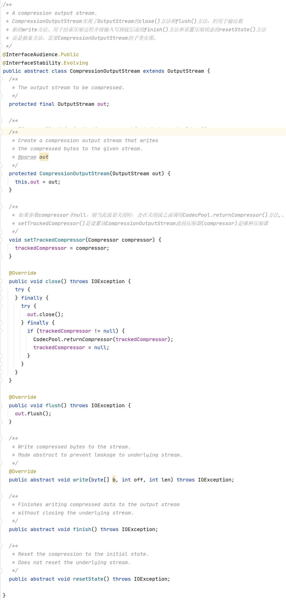
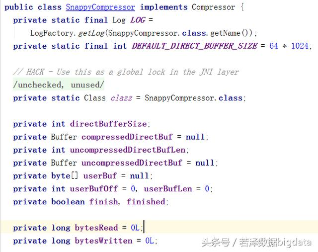
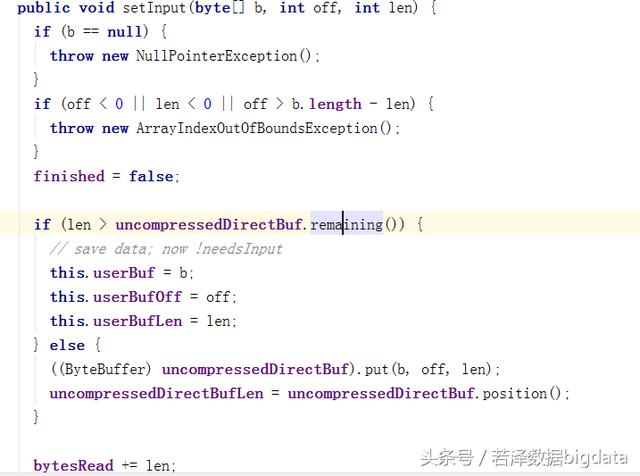
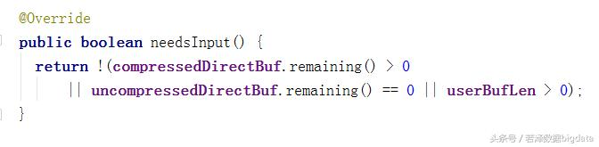
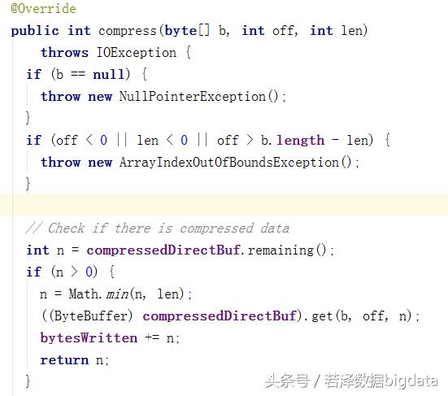
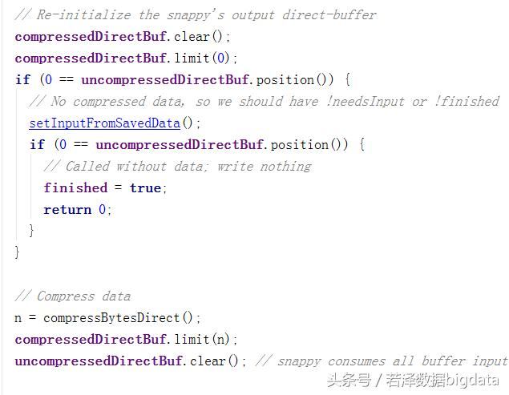
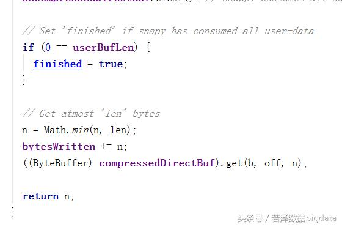
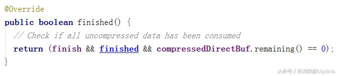

压缩流和解压缩流
Java最初版本的输入/输出系统是基于流的，流抽象了任何有能力产出数据的数据源，或者是有能力接收数据的接收端。一般来说，通过设计模式装饰，可以为流添加一些额外的功能，如前面提及的序列化流ObjectInputStream和ObjectOutputStream, 就是给OutputStream添加了自己独有的功能。
压缩流（CompressionOutputStream)和解压缩流(CompressionInputStream)是Hadoop压缩框架中的另一对重要概念，它提供了基于流的压缩和解压缩能力。
这里只分析和压缩相关的代码，即CompressionOutputStream及其子类, 解压缩的原理和流程是类似的。
OutputStream是一个抽象类，提供了进行流输出的基本方法，它包含三个write()成员方法的重载，分別用干往流中写入一个字节、一个字节数组、一个字节数组的一部分（需要提供起始偏移量和长度）。
注意
流实现中一般需要支持的close()和flush()方法，是java.io包中的相应接口的成员函数。
CompressionOutputStream继承自OutputStream，也是个抽象类。如前面提到的ObjectOutputStream、CompressionOutputStream为其他流(不一定是字节流, 也可以是其他包装流)添加了附加额外的压缩功能，而实际设计CompressionOutputStream类时, 包装其它流的方式是: 首先将其他流在CompressionOutputStream类中作为成员变量(out)存在，并将其它流作为CompressionOutputStream类的构造方法的参数, 在构造的时候给out被赋值,达到包装其他流的目的。包装流一般都是这样设计的。
CompressionOutputStream实现了OutputStream的close()方法和flush()方法，但用于输出数据的write方法、用于结束压缩过程并将输入写到底层流的finish()方法和重置压缩状态的resetState()方法还是抽象方法，需要CompressionOutputStream的子类实现，相关代码如下：

CompressionOutputStream规定了压缩流对外接口，如果已经有了一个压缩器的实现，能否提供一个通用的、使用压缩器的压缩流实现呢？答案是肯定的，CompressorStream使用的压缩器实现了一个通用的压缩流，代码如下：

CompressorStream提供了几个不同的构进函数，用子初始化相关的成员变量。其中，Compressorstream需要的底层输出流out和压缩时使用的压缩器，都作为参数传入构造函数，另一个参数是CompressorStrem工作时使用的缓冲区buffer的大小，构造时会利用这个签数分配该缓冲区。
CompressorStream.write()方法用将待压缩的数据写入流中，待压缩的数据在进行一番检查后。最终调用压缩器的setlnput()方法进人压缩器。setlnput方法调用结束后，通过Comprcssor.needsInput()判断足否需要调用compress()方法，获取压缩后的输出数椐。
当finish()被调用（往往是CompressorStream被关闭），这时CompressorStream流调用压缩器的finish()方法通知输人已经结束，然后进人另一个循环，该循环不断读取压缩器中未读取的数，然后输出到底层流out中。
支持Snappy压缩
Snappye的前身是Zippy,虽然只是一个数据压缩库，却被Google用于许多内部项目，如BigTable、MapReduce等，Google表示泫箅法库针对性能做了调整，针对64位x86处理器进行优化，并在英特尔酷睿i7处理器单一核心上实现了至少毎秒250MB的压缩性能和每秒500MB的解压缩性能。Snappy在Google的生产环境中经过了PB级数据压缩的考验，并使用NewBSD协议开源。
本文不介绍Snappy压缩算法是如何实现的，而是在前面已有的基础上，介沼如何在Hadoop提供的压缩框架下集成新的压缩算法。本文只介绍和压缩相关的实现，将涉及org.apache.hadoop.io.compress.snappy包下的代码和org.apache.hadoop.io.compress.SnappyCodec类。
org.apache.hadoop.io.compress.snappy包括支持Snappy的压缩器SnappyCompressor和解Qi器SnappyDecompressor.LoadSnappy类用于判断Snappy的本地库是否可用，如果可用，则通过System.loadLibrary()加栽本地库。
SnappyCompressor实现了Compressor接口,是重点。前面提过，压缩器的一般用法是循环调用setlnput()、finish()和compress()三个方法对数据进行压缩。在分析这些方法前，了解SnappyCompressor的主要成员变量，如下所示：

SnappyCompressor的主要属性有compressedDirectBuf和uncompressedDirectBuf,分別用于保存压缩前后的数据，类型都是Buffer。缓冲区Buffer代表一个有限容董的容器，是JavaNIO(新输入/输出系统)中的重要槪念，和基于流的JavaIO不同，缓冲区可以用于输入，也可以用于输出。为了支持这些特性，缓冲区会维持一些标记，记录目前缓冲区中的数据存放情况。
成员变量userBuf、userBufDff和userBufLen用于保存通过setlnput()设置的，但超过压缩器工作空间uncompressedDirectBuf剩余可用空间的数据。后面在分析setlnput()方法的时候，可以看到这三个变董是如何使用的。
在分析压缩器/解压器和压缩流/解压缩流时，一直强调Compressor的setlnput()、needslnput()、finish()、finished()和compress()5个方法间的配合，那么为什么需要这样的配合呢？让我们先从setlnput()开始了解这些方法的实现。
1.setlnput()
seInput()方法为压缩器提供数据，在做了一番输人数据的合法性检査后，先将finished标志位置为false,并尝试将输人数据复制到内部缓冲区中，如果内部缓存器剩余空间不够大，那么，压缩器将'借用'输人数据对应的缓冲区，即利用useBufOff和userBufLen记录输入的数据。否則，setlnput()复制数据到uncompressedDirectBuf中。
需要注意的是，当'借用'发生时，使用的是引用，即数据并没有发生实际的复制，用户不能随便修改传入的数据。同时，缓冲区只能借用一次，用户如果再次调用setlnput(),将会替代原来保存的相关信息，造成数据错误。代码如下:

setlnput()借用外部缓冲区后就不能再接收数据，这时，用户调用needsInput()将返回false，就可以获知这个信息。
2.needsInput()
needsInput()方法返回false有三种情况：输出缓冲区(即保存压缩结果的缓冲区)有未读取的数据、输入缓冲区没有空间，以及压缩器已经借用外部缓冲区。这时，用户需要通过compress()方法取走已经压缩的数据。直到needsInput()返回true，才可以再次通过setInput()方法添加压缩数据，代码如下

3.compress()
compress()方法用于获取压缩后的数据，它需要处理needslnput()返冋false的几种情况。
如果压缩数据缓冲区有数据，即comprcssedDirectBuf中还有数据，则读取这部分数据，并返回。
如果该缓冲区为空，则需要压缩数据。首先清理compressedDirectBuf,这个淸理是一个典型的Buffer操作。待压缩的数据有两个来源，输人缓冲区uncompressedDirectBuf或者'借用'的数据缓冲区。
如果输人缓冲区没有数据，那待压缩数据可能（可以在没有任何待压缩数据的情况下调用compress()方法）在'借用'的数据缓冲区里，这时使用setInputFromSavedData()方法复制'借用'数据缓冲区中的数据到uncompressedDirectBuf中。setInputFromSavedData()函数调用结束后，并且待压缩数据缓冲区里也没有数据，则设finished标记位，并返回0，表明压缩数据已经读完。
uncompressedDirectBuf中的数据，利用native方法compressBytesDirect()进行压缩，压缩后的数据保存在compressedDirectBuf中，由于待压缩数据缓冲区和压缩数据缓冲区的大小是一样的，所以uncompressedDirectBuf中的数据是一次被处理完的。
compressBytesDirect()调用结束后，需要再次设置缓冲区的标记，并根据情况复制数据到compress()的参数b提供的缓冲区中。相关代码如下：



最后是finished()
finished()返回true，表明压缩过程已经结束，压缩过程包含多个条件，包括finish标志位和finished标志位必须都为true，以及compressedDirectBuf没有未取走的数据。finish为true表明用户确认已经完成数据的输入过程，finished为true表示压缩器中没有待压缩的数据，这三个条件缺一不可，代码如下

其他方法就不一一介绍了。
希望大家通过在本文能自己掌握如何自己添加集成一个压缩方式。